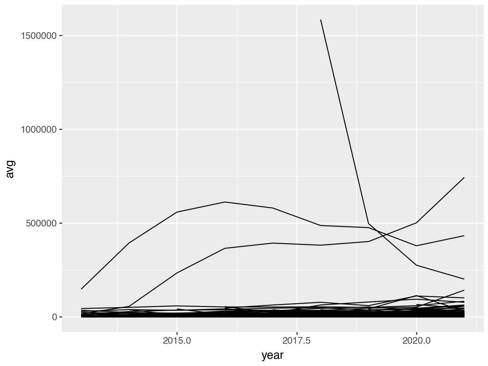

Note: This assignment must be submitted in github classroom.
Instructions:
Answer the first question in R, and the second question in Python
Once you have finished this assignment, render the document (Ctrl/Cmd-Shift-K or the Render button).
Commit the qmd file and any other files you have changed to the repository and push your changes.
In Canvas, submit a link to your github repository containing the updated files.
About the Data: Steam Games
TidyTuesday is an organization that provides new datasets every Tuesday for people to practice their data tidying and manipulation skills. This assignment uses a data set about Steam (an online gaming platform) game popularity over time. See the readme for more information about the dataset.
Data Dictionary
variable
class
description
gamename
character
Name of video games
year
double
Year of measure
month
character
Month of measure
avg
double
Average number of players at the same time
gain
double
Gain (or loss) Difference in average compared to the previous month (NA = 1st month)
peak
double
Highest number of players at the same time
avg_peak_perc
character
Share of the average in the maximum value (avg / peak) in %
games <- readr::read_csv('https://raw.githubusercontent.com/rfordatascience/tidytuesday/master/data/2021/2021-03-16/games.csv')
Rows: 83631 Columns: 7
── Column specification ────────────────────────────────────────────────────────
Delimiter: ","
chr (3): gamename, month, avg_peak_perc
dbl (4): year, avg, gain, peak
ℹ Use `spec()` to retrieve the full column specification for this data.
ℹ Specify the column types or set `show_col_types = FALSE` to quiet this message.
library(ggplot2) # load ggplot2 package
# Run this if you haven't installed plotnine alreadyreticulate::py_install("plotnine")
Alternately, in the terminal type pip install plotnine. Either option will work.
month.name is a built-in vector containing month names that you can use to create a factor variable. Factor variables can be easily converted into numeric variables. This might help you get a numeric month, which might help you get to a fractional year.
subset() is a function that will subset a data frame based on a logical condition. It might be easier to use than logical indexing (though you can use either). You can also use the filter function in the dplyr package.
To get a line graph in ggplot2, use geom_line(). Using aes(color = varname) will color the lines by variable name.
Some sample code to make a line graph in ggplot is provided below:
library(dplyr)# Get only January months so that there's one point a yearjan_data <-subset(games, month =="January")# x axis is year, y axis is average players# group = gamename says draw one line for each gameggplot(data = jan_data, aes(x = year, y = avg, group = gamename)) +geom_line()
Python
The time module contains the strptime function, which may help you to get from month name to month number.
Pandas will let you sort a data frame in decreasing order of variable x using sort_values('x', ascending = False)
You can select rows of a python data frame that match a list using .isin()demo. Alternately, Pandas data frames have a method df.query() that allows you to pass a logical condition and select rows based on that. This may be easier to use than logical indexing (though you can use either).
Using the .assign() function to create new variables will reduce the number of errors you run into.
To get a line graph in plotnine, which is a clone of ggplot2 for python, use geom_line(). Using aes(color = 'varname') will color the lines by variable name. Some sample code to make a line graph in ggplot is provided below:
# Get only January months so that there's one point a yearjan_data = games.query('month == "January"')# x axis is year, y axis is average players# group = gamename says draw one line for each game( ggplot(jan_data, aes(x ='year', y ='avg', group ='gamename')) + geom_line())
<ggplot: (8751548372161)>

Planning R Code: Replicate the plot
Your first goal is to get to this graph by breaking down the problem (replicating the graph) into smaller steps that make sense and that you can accomplish piece-by-piece.
Target plot to replicate
Problem Steps
Make a list of steps that will be necessary to get the data you have into this form.
Problem Code
Provide code that sequentially works through your list of steps to produce the graph. You might put your steps as comments to remind yourself what you’re doing at each point in the code.
# Code for step 1 goes here
# Code for step 2 goes here
Reflection
How did your initial list of steps compare to the steps you ended up with when you wrote code? Were your initial steps too detailed? Too simple? What can you learn from this when planning out how to write code for a new problem?
Write 2-3 sentences addressing the above topic.
Planning Python Code: Replicate a (different) plot
Plot to replicate
This plot shows the 5 games with the most average users in March of 2020. It is ok if you can replicate this plot to the point where the legend doesn’t show up properly, as in this image:
Legend not quite right
Problem Steps
Make a list of steps below that will be necessary to get the data you have into this form.
Problem Code
Provide code that sequentially works through your list of steps to produce the necessary table of games.
# Code for step 1 goes here
# Code for step 2 goes here
Reflection
How did your initial list of steps compare to the steps you ended up with when you wrote code? Were your initial steps too detailed? Too simple? What can you learn from this when planning out how to write code for a new problem? Did you get any better at writing out your steps this time after answering the previous problem?